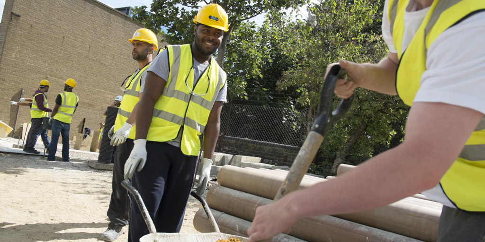
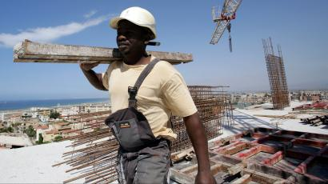
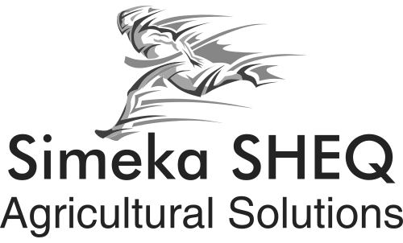

Health and Safety Services
- Compiling OHS site files based on requirements of legislation and OHS Specifications.
- Developing Occupational Health and Safety Plans and Environmental Plans.
- Compilation of site specific risk assessments.
- Compilation of Client and project specific OHS specification.
- Legal compliance Audits.
- Physical site inspections.
- Basic site specific training as required on construction sites and client training needs.
- Development of training materials.
Environmental Assessments
- Environmental Site Assessments (Basic Assessment and EIAR).
- Environmental Risk Assessments.
- Environmental Management Programme.
- Groundwater and Surface Water Sampling & Monitoring.
- Environmental Sampling & Monitoring.
- Natural Resources Inventory and Assessment.
- Wetland Delineation, Planning, Mitigation, and Monitoring.
- Wetland, Coastal, and Upland Habitat Restoration, Enhancement, and Preservation.
- Exotic and Nuisance Vegetation Removal.
- Water Resources Development, Monitoring, Treatment, and Management.
Mining and Environmental Audits
- Conducts the Mining Environmental Management Programmes and Reporting (EMPRs) in
terms of section 27 and regulations 52 of the Minerals and Petroleum Resources
Development Act (MPRDA) 2002 (Act 28 of 2002) for mining prospecting nd mining permits.
- Environmental Management Systems Audits for mining institutions, municipalities
to enable business activities to comply with applicable country’s environmental legislation.
- Environmental Management Systems (EMS) Audits.
- Waste Management Audits.
- Environmental Management Legal Audits.
- Environmental Monitoring Audits.

Agriculture
- Agricultural Extension in crop and livestock production including conducting production analysis.
- Enterprise and whole farm budget preparation and implementation.
- Experience in Project preparation, design and management.
- Experience in policy analysis and development.
- Experience in strategic planning and management.
- Experience in Project and Programmes Monitoring and Evaluation.
- Human resources development and Management including staff management and training.
- Project Financial and Human Resource Management.
- Liaison, Networking and Collaboration with relevant stakeholders to expand markets of product.
- Reforestation.
- Land Use Planning.
- Land Capability Assessment.

Project Development Services
- Monitoring and Evaluation of programs using SPSS package.
- Training of co-workers in a lot of disciplines including Monitoring and Evaluation.
- Expertise in working HIV/AIDS programmes.
- Facilitation, advocacy, community mobilization and capacity building.
- Baseline surveys (Gender assessments, Situational analysis,
Community socio-economic profile, production analysis,
livelihoods analysis, institutional analysis).
- Facilitation linkages that promote agricultural through the value chain system.
- Socio-Economic Assessment.
- Social Research organisation and management(socio-economic, gender, food
security analysis, project/program impact assessment)
- An expert in Participatory Rural Appraisal
(PRA) techniques for research, training, community mobilization and facilitation

Go to Top of Page